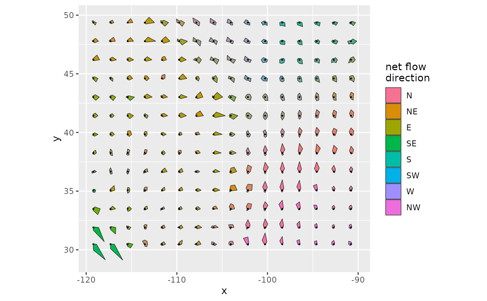
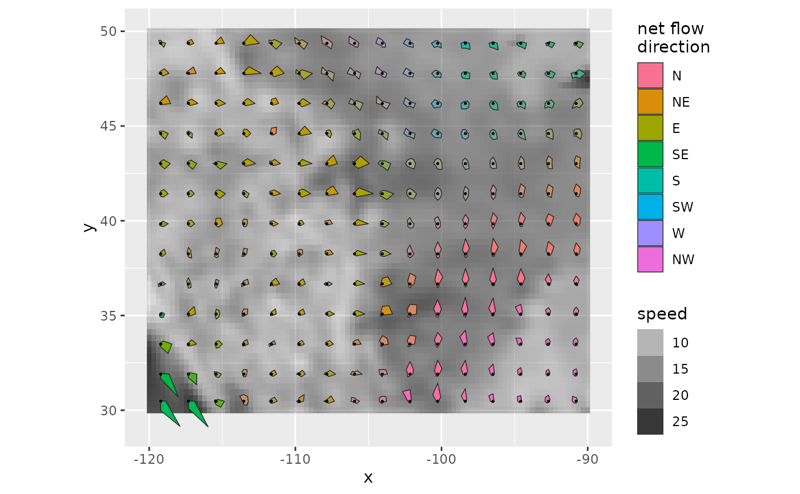
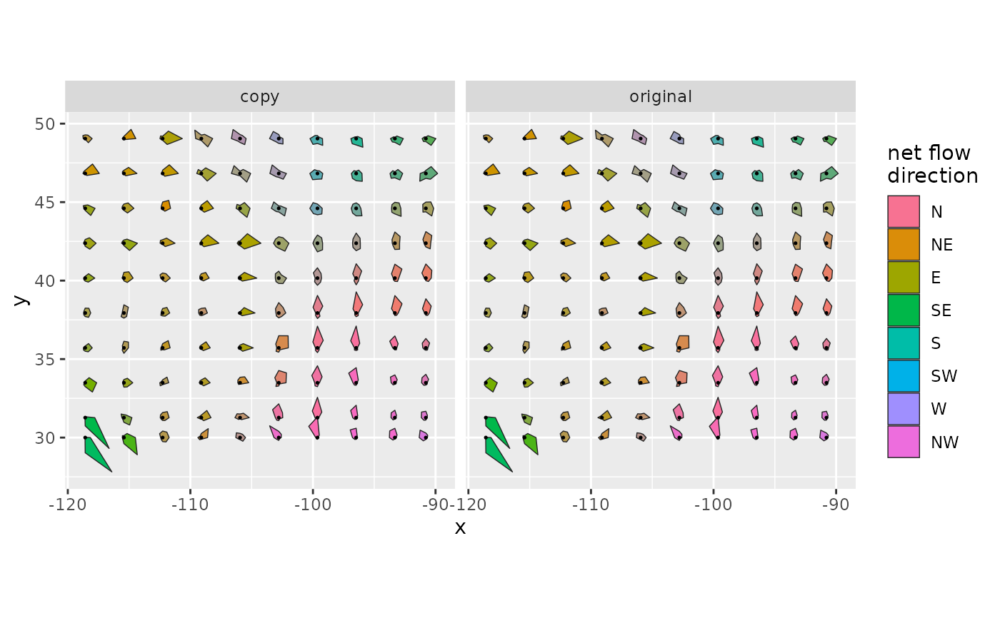

Wind rose glyphs: a map of local wind roses
geom_wind_rose.RdDraws a star glyph for each block of grid cells in a wind rose, showing the strength of flow
toward each of the eight neighbors. stat_wind_rose() does the computation: converting
conductance to flow, averaging over blocks, and building glyph polygons. geom_wind_rose()
draws them, coloring each glyph by its net flow direction and graying it out where flow
has little net direction.
Usage
geom_wind_rose(
mapping = NULL,
data = NULL,
stat = StatWindRose,
position = "identity",
...,
res = 15,
scale = 1,
saturation = 0.5,
center = TRUE,
bearing_scale = NULL,
na.rm = FALSE,
show.legend = NA,
inherit.aes = TRUE
)
stat_wind_rose(
mapping = NULL,
data = NULL,
geom = GeomWindRose,
position = "identity",
...,
res = 15,
scale = 1,
saturation = 0.5,
center = TRUE,
bearing_scale = NULL,
na.rm = FALSE,
show.legend = NA,
inherit.aes = TRUE
)Arguments
- mapping
Aesthetic mappings created by
ggplot2::aes().xandy(cell center coordinates, in degrees longitude and latitude) must be mapped, usually in the plot's main call:ggplot(rose, aes(x, y)). The eight conductance columns (SW,W,NW,N,NE,E,SE,S) are mapped automatically to columns of the same names, as produced byfortify()on awind_rose(see fortify.windscape). If your columns are named differently, map them in this layer'smappingrather than inggplot2::ggplot(): the automatic mappings are part of the layer, so they take precedence over plot-level ones.- data
A data frame, or a
wind_rose, which is converted withfortify(). Default is to inherit the plot's data.- stat, geom
Use to override the default pairing of
stat_wind_rose()andgeom_wind_rose().- position
Position adjustment; see
ggplot2::layer().- ...
Other arguments passed to
ggplot2::layer(), such as fixed aesthetics likecolor = "black".- res
Approximate number of glyphs along the longer side of the data's extent. Blocks of grid cells are sized to be approximately square in km. The same blocks are used in every panel, so faceted glyphs are directly comparable. Default 15.
- scale
Multiplier for the size of all glyphs. At the default of 1, the longest ray of a typical large glyph (the 90th percentile across all glyphs in the layer, including all panels) is half the spacing between glyphs.
- saturation
Consistency (see Computed variables) at and above which glyph fill is shown at full strength; glyphs with lower consistency are blended toward gray. Set to 0 to disable blending. Default 0.5.
- center
Logical: draw a point at each glyph's center? Default
TRUE.- bearing_scale
Logical: add
scale_fill_bearing()to the plot? DefaultTRUEiffillis neither mapped nor set, otherwiseFALSE.- na.rm, show.legend, inherit.aes
See
ggplot2::layer().
Details
Each glyph's eight rays point toward the eight neighbors, with length proportional to flow in that direction: conductance times the distance to the neighbor, averaged over the block, in km/h. Unlike conductance, which is a rate per grid cell, flow does not depend on cell size, so it can be averaged across cells and compared across latitudes. The flows sum to the mean wind speed, and their vector sum is the net flow.
Glyphs are built in longitude/latitude coordinates, scaled so that their shapes are correct
in km at each glyph's latitude. Use ggplot2::coord_quickmap() or ggplot2::coord_sf()
with a longitude/latitude CRS so that the map's aspect ratio matches; in projected
coordinates, glyph angles are distorted.
Computed variables
bearing: direction of net flow, in degrees clockwise from north.consistency: net flow divided by total flow (mean resultant length); near 1 where wind blows predominantly one way, near 0 where it has no net direction.speed: total flow, the mean wind speed in km/h (iftrans = 1inwind_rose()and wind speeds are in m/s).net: net flow speed, in km/h.n: number of grid cells in the glyph's block.x0,y0: glyph center, the mean coordinates of the cells in its block.
By default, fill is mapped to after_stat(bearing) and the consistency aesthetic to
after_stat(consistency).
Examples
library(ggplot2)
rose <- windscape_example("wind_rose")
ggplot(rose, aes(x, y)) +
geom_wind_rose() +
coord_quickmap()

# a background of mean wind speed: the glyphs use the fill scale, so show the background
# with alpha (or use a second fill scale, e.g. from the ggnewscale package)
ggplot(rose, aes(x, y)) +
geom_raster(aes(alpha = speed), fill = "gray20") +
geom_wind_rose() +
coord_quickmap()

# faceting: glyphs use the same blocks and size scale in every panel
d <- rbind(cbind(fortify(rose), version = "original"),
cbind(fortify(rose), version = "copy"))
ggplot(d, aes(x, y)) +
geom_wind_rose(res = 10) +
facet_wrap(~version) +
coord_quickmap()
